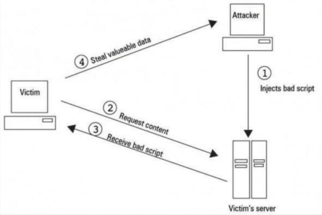

Introducción:
Existen millones de páginas web, las hay de muchos tipos y para muchos propositos diferentes,
hay algo que muchas tienen en común, que ofrecen un acceso tanto para usuarios como para el administrador de la misma. Para evadir este tipo de acceso existe un tipo de ataque
llamado "Cross Site Scripting". Existen dos tipos de este mismo ataque pero nos vamos a centrar en el almacenado.
Escenario:
Nos encontramos frente a una página web de tipo blog, en la que observamos varios post,
un acceso para el administrador y un apartado con un formulario para escribir comentarios.

Objetivo:
Ejecuta un ataque xss a partir de los siguientes pasos:
- Comprueba la vulnerabilidad de la página ante ataques xss.
- Crea un página escrita en "php" para capturar el valor de una cookie.
- Arranca un servidor "php" en tu equipo y monitoréalo.
- Inyecta código javascript en el formulario de los comentarios para desviar el tráfico a tu servidor, con la página "php" que has creado.
- Captura la cookie con el monitoreo de tu servidor.
- Busca un programa para agregar la cookie a la página real, en tu propio navegador.
Consejos:
- Ten clara la mecánica del xss almacenado antes de realizar éste reto.
- Comprueba bien el código en busca de errores de sintáxis o direcciones ip que te puedan ocasionar fallos a la hora de realizar el ataque.
- Si necesitas descargar algún programa extra, hazlo.
- Si sigues los objetivos uno a uno, con un poco de programación puedes resolver este reto.
Pistas:
- Si dedicas 5 min a buscar en internet este tipo de ataque puede que obtengas bastante información.
Ultimo apunte:
Disfruta del reto y recuerda que es educativo. Ésto solo demuestra lo
fácil que sería robar nuestros datos en una página web que no esté protegida contra este tipo de ataques.
Descarga las máquina desde el siguiente enlace :
Mega